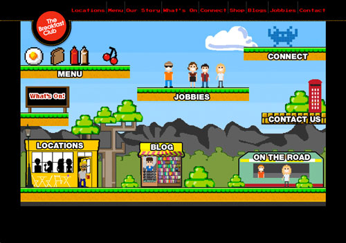
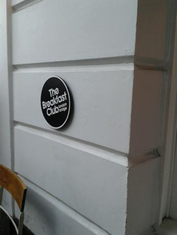
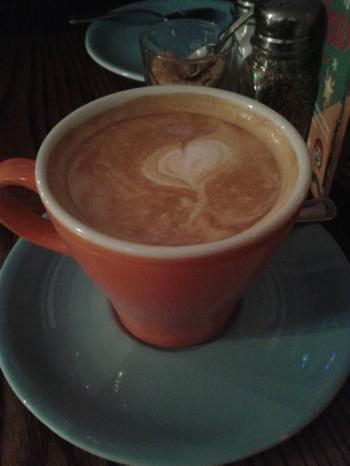
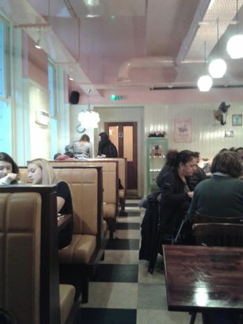
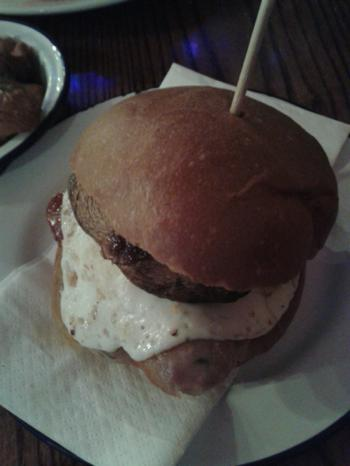
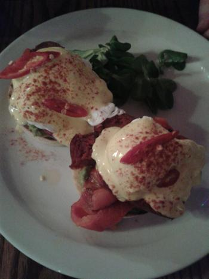
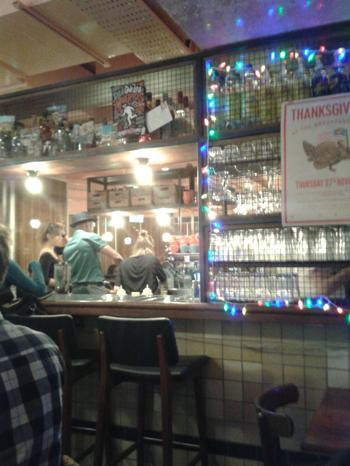

웹사이트가 늠 맘에들어서 급 결정
토욜날 아침 먹으러 댕겨왔다
.......오후 3시쯤;;;

런던브리지 지점 방문
20분정도 대기
원래 음식점앞에 사람들 줄선거 보이면 바로 포기하는데
오늘 비오고 바람 미친듯이 불고
아 시바 영쿡 이란 소리가 절로나오는 날씨
+
토요일 런던 중심가의 위엄 미친듯이 많은 사람들 ㅜㅜ
의 콤보로
걍 얌전히 줄서서 기다림^^;;

라떼한잔

내부 귀여웠다
출입구앞에 계란후라이모양 전등 갖고싶어 ㅜㅜ
귀여워 ㅜㅜ

내가 주문한건
Posh Sausage Sandwich + egg 추가
Sausage (veg available), smoked Applewood cheese,
Portobello mushroom and red onion chutney on a crusty roll
Applewood cheese가 소세지랑 넘 잘어울림 ㅜㅜ 맛나 ㅜㅜ

이건 Huevos Al Benny
Poached eggs, chorizo, roast peppers, avocado, fresh chillies,
spicy hollandaise on toasted English Muffin
처음 접시봤을때는 작아보였는데
먹어보더니 이거 양 엄청 많다고 그럼

메뉴가 잼난게 많아서 다음에 또 가고 싶네용 ㅜㅜ
오늘도 메뉴판 보고 한참 고민했다능
밀크쉐이크랑 스무디 메뉴도 궁금합니다
음식 맛있고 메뉴도 좋고 가격도 괜찮은편이고
다 좋은데 죽을만큼 시끄러워요 ㅜㅜ
밥먹고 바로튀어나왔음
그리고 이날 무자비한 날씨
+
버스로 15분정도 걸리는 거리를
차가막혀서 40분이상 소요
진짜 걸어가는게 빠를뻔 ㅡㅡ;;;
+
워털루근처지나가는데 무슨 행사가 있는지
그 비바람치는 상황에서도 사람이 너무너무많아서;;
이리저리 치이고
코벤트가든 들러서 잠깐 신발구경하고 온다는게
사람에게 너무 치여서 영혼까지 탈탈털리고 온 느낌입니다;;
가끔 런던센트럴 too much하다고 느낄때가 있는데
한시간도 안 돌아다녀도 너무 많은 사람과 복잡스러움때문에
순식간에 HP 몽땅 털리는 그런느낌;;;;
오늘이 그랬어요 ㅜㅜ
일찍들어와서 뜨신물로 샤워하고 뒹굴면서
인터넷하니 좀 안정이 되는군요;;
역시 집이 최고;;;;